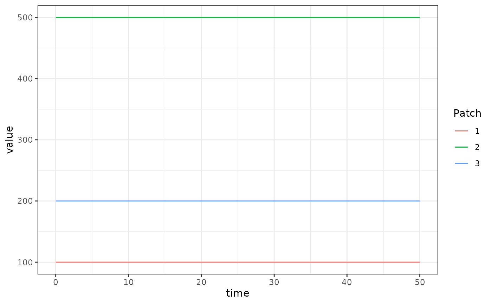

The basicL_xde competition aquatic mosquito model fulfills the generic interface of the aquatic mosquito component. It has a single compartment “larvae” for each aquatic habitat, and mosquitoes in that aquatic habitat suffer density-independent and dependent mortality, and mature at some rate .
Differential Equations
Given and some egg laying rate from the adult mosquito population we could formulate and solve a dynamical model of aquatic mosquitoes to give that emergence rate. However, in the example here we will simply use a trivial-based (forced) emergence model, so that completely specifies the aquatic mosquitoes.
The simplest model of aquatic (immature) mosquito dynamics with negative feedback (density dependence) is:
Because the equations allow the number of larval habitats to differ from , in general the emergence rate is given by:
Where is a matrix and is a length column vector given as:
Equilibrium solutions
In general, if we know the value of at equilibrium we can solve for directly by using the above two equations. Then we can consider , the strength of density dependence to be unknown and solve such that:
Example
The long way
Here we run a simple example with 3 aquatic habitats at equilibrium.
We use ramp.xds::make_parameters_L_basicL_xde to set up
parameters. Please note that this only runs the aquatic mosquito
component and that most users should read our
fully worked example to run a full simulation.
nHabitats <- 3
nPatches=nHabitats
membership=1:nPatches
params <- make_xds_template("ode", "aquatic", nPatches, membership)
alpha <- c(10, 50, 20)
eta <- c(250, 500, 170)
psi <- 1/10
phi <- 1/12
L <- alpha/psi
theta <- (eta - psi*L - phi*L)/(L^2)
Lo = list(eta=eta, psi=psi, phi=phi, theta=theta, L=L)
MYZo = list(MYZm <- eta)
#params$Xpar[[1]]=list()
#class(params$Xpar[[1]]) <- "trivial"
#params$MYZpar[[1]]=list()
params$eggs_laid = list()
params$eggs_laid[[1]] = eta
F_eta = function(t, pars){
pars$eggs_laid[[1]]
}
params = make_Lpar("basicL", params, 1, Lo)
params = make_Linits(params, 1, Lo)
params = make_MYZpar("trivial", params, 1, MYZo)
params = make_indices(params)
xDE_aquatic = function(t, y, pars, F_eta) {
pars$eggs_laid[[1]] <- F_eta(t, pars)
dL <- dLdt(t, y, pars, 1)
return(list(c(dL)))
}
y0 <- get_inits(params)
out <- deSolve::ode(y = as.vector(unlist(y0)), times = seq(0,50,by=10), xDE_aquatic, parms = params, method = 'lsoda', F_eta = F_eta)
out1 <- out
colnames(out)[params$L_ix+1] <- paste0('L_', 1:params$nHabitats)
out <- as.data.table(out)
out <- melt(out, id.vars = 'time')
out[, c("Component", "Patch") := tstrsplit(variable, '_', fixed = TRUE)]
out[, variable := NULL]
ggplot(data = out, mapping = aes(x = time, y = value, color = Patch)) +
geom_line() +
theme_bw()
Using Setup
The function xds_setup_aquatic sets up a model that
includes only aquatic dynamics, and it is solved using
xds_solve.aqua. The setup functions are simpler than
xds_setup and come with constrained choices. The user can
configure any aquatic model (trivial wouldn’t make much
sense), and it uses trivial to force egg laying.
We configure the aquatic model: Lo is a list with the
parameter values attached.
Lo = list(
psi = 1/10,
phi = 1/12
)
alpha = c(10, 50, 20)
Lo$L = with(Lo, alpha/psi)
Lo$theta = with(Lo, (eta - psi*L - phi*L)/(L^2))We use the MYZ model trivial to configure egg
laying.
xds_setup_aquatic(nHabitats=3, Lname = "basicL", Lopts = Lo, MYZopts = Mo) -> aqbasicL_xde
xds_solve(aqbasicL_xde, Tmax=50, dt=10)$output$orbits$deout -> out2
sum(abs(out1-out2)) == 0
#> [1] TRUE